Información Nutricional de Frutas y Verduras
| Fruta | Nombre | Calorías | Carbohidratos | Proteínas | Grasas | Fibra | Vitaminas | Minerales |
|---|---|---|---|---|---|---|---|---|
| 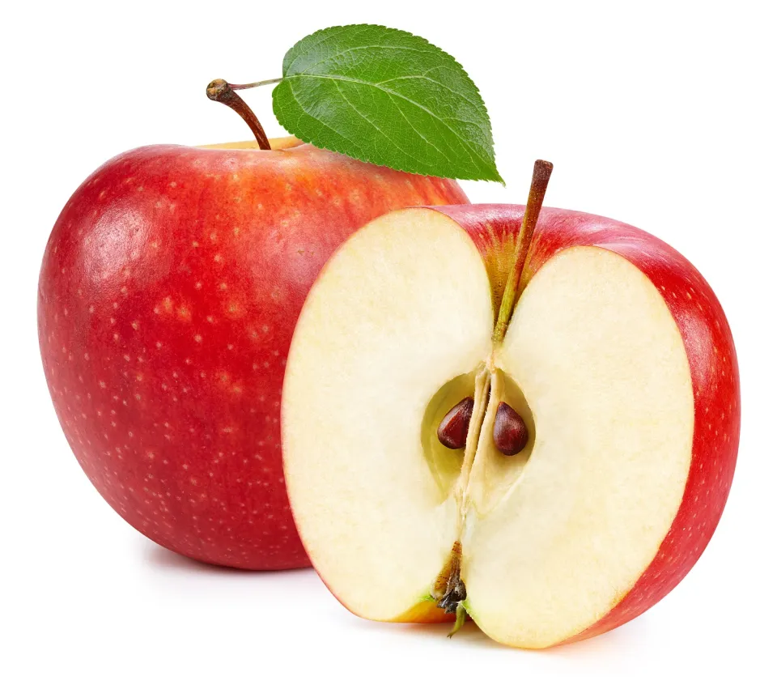 | Manzana Roja | 52Kcal | 14g | 0.3g | 0.2g | 2.4g | Vitamina C | Calcio, Hierro, Potasio |
| 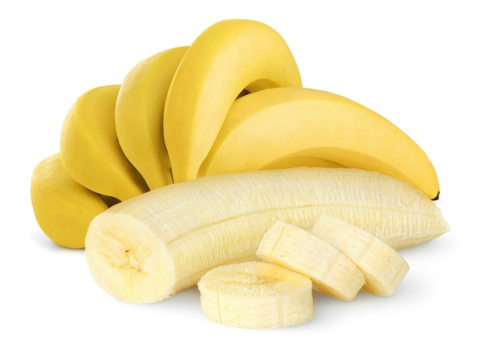 | Banano | 89Kcal | 23g | 1.1g | 0.3g | 2.6g | Vitamina C, B6 | Calcio, Hierro, Potasio |
 |
Fresa | 33Kcal | 100g | 0.7g | 0.3g | 2.2g | Vitaminas C, B6 | Calcio, Hierro, Potasio |
| 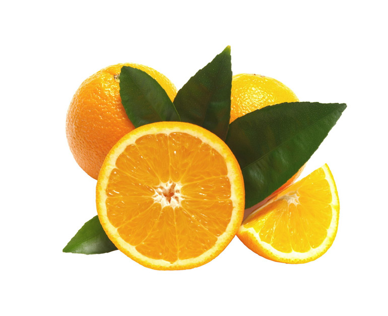 | Naranja | 47Kcal | 12g | 0.9g | 0.1g | 2.4g | Vitamina C | Calcio, Hierro, Potasio |
 |
Pera | 57Kcal | 26.6g | 0.43g | 0.2g | 6g | Vitaminas A1,B1,B2,B3,C | Potasio, Magnesio, Fosforo |
 |
Sandia | 32Kcal | 7.8g | 0.62g | 0.43g | 0.5g | Vitaminas A,C | Potasio, Calcio, Magnesio |
| 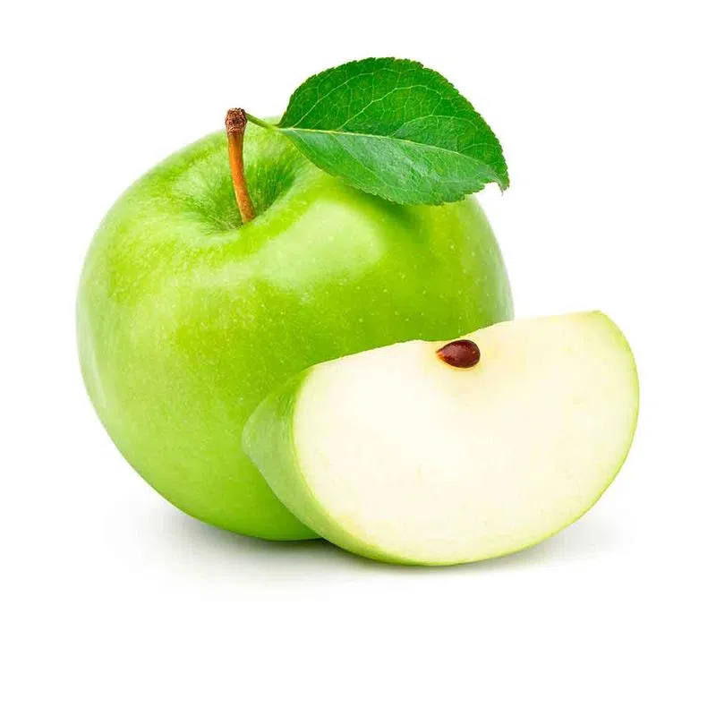 | Manzana Verde | 81Kcal | 19g | 0g | 0.2g | 2.4g | Vitamina C | Calcio, Hierro, Potasio |
| 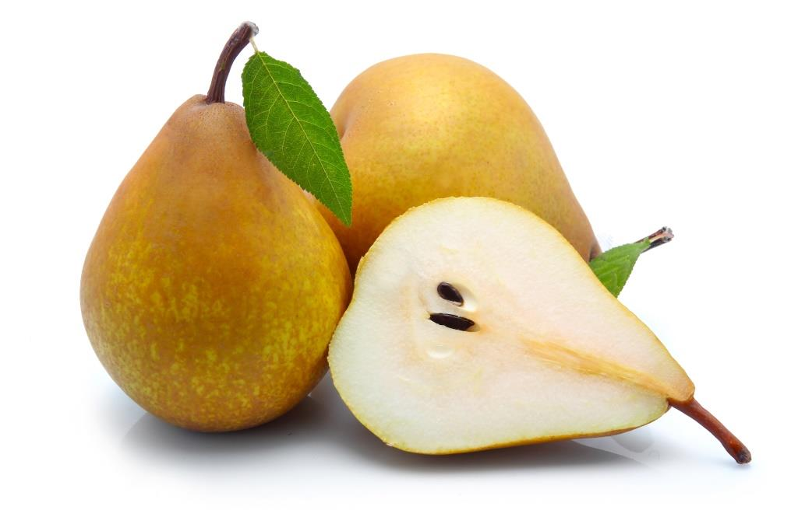 | Pera Bosc | 63Kcal | 26.6g | 15g | 0g | 3.1g | Vitaminas A1,B1,B2,B3,C | Potasio, Magnesio, Fosforo |
| Vegetal | Nombre | Calorías | Carbohidratos | Proteínas | Grasas | Fibra | Vitaminas | Minerales |
|---|---|---|---|---|---|---|---|---|
| 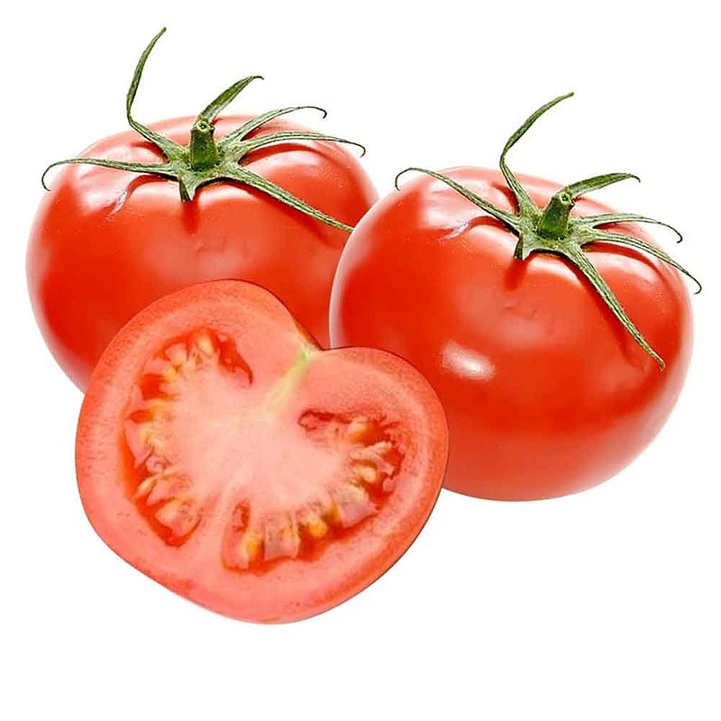 | Tomate | 18Kcal | 3.5g | 1.20g | 0.20g | 1.1g | Vitaminas A1,B9,C | Potasio, Calcio,Fosforo |
| 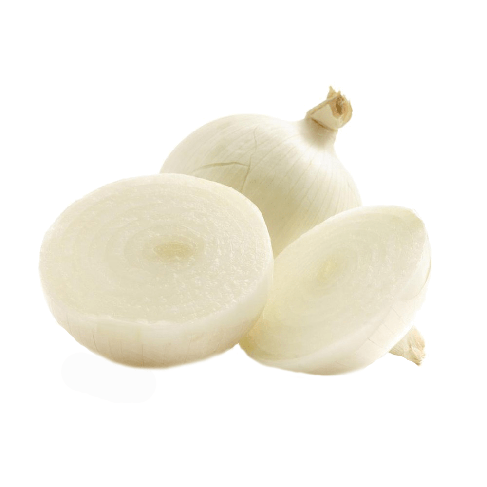 | Cebolla Blanca | 42Kcal | 1.6g | 0.25g | 8.6g | 1.1g | Vitaminas B1,B2,B3,B9 | Hierro, Calcio, Magnesio |
| 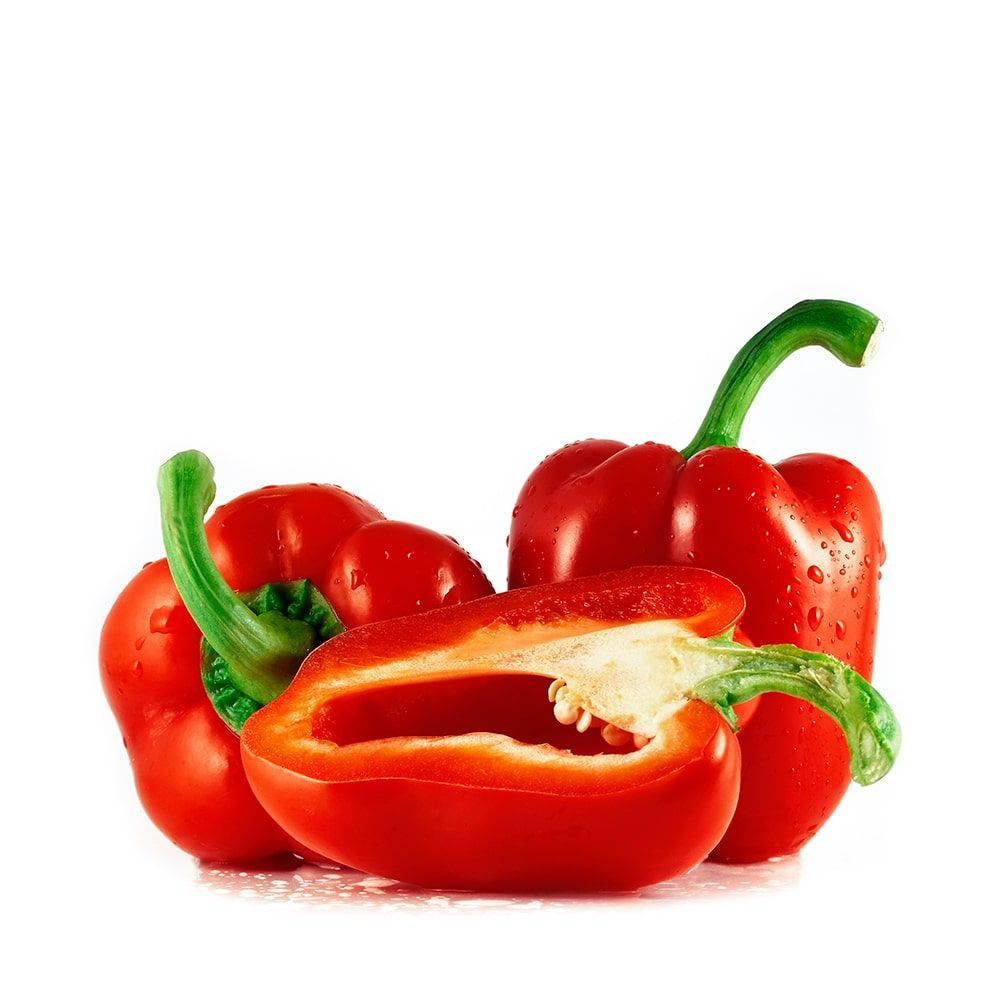 | Pimenton Rojo | 31Kcal | 4.6g | 1 | 2.34g | 1g | Vitaminas A,B1,B2,B3,B6 | Potasio, Calcio, Magnesio |
| 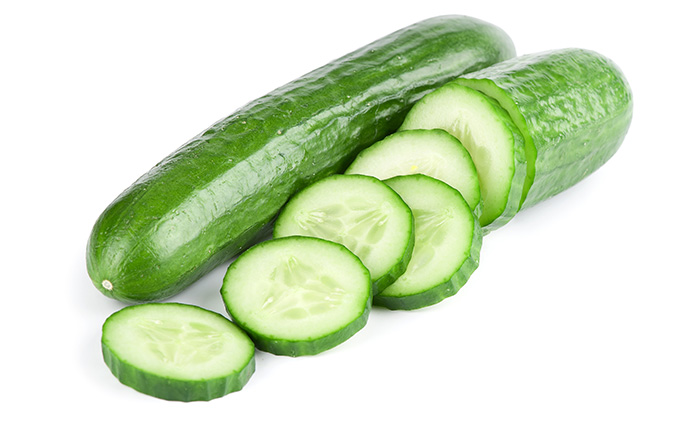 | Pepino C | 15Kcal | 2g | 0.66g | 0.1g | 0.8g | Vitaminas A,B1,B2,B3,B6 | Hierro, Calcio, Fosforo |
| 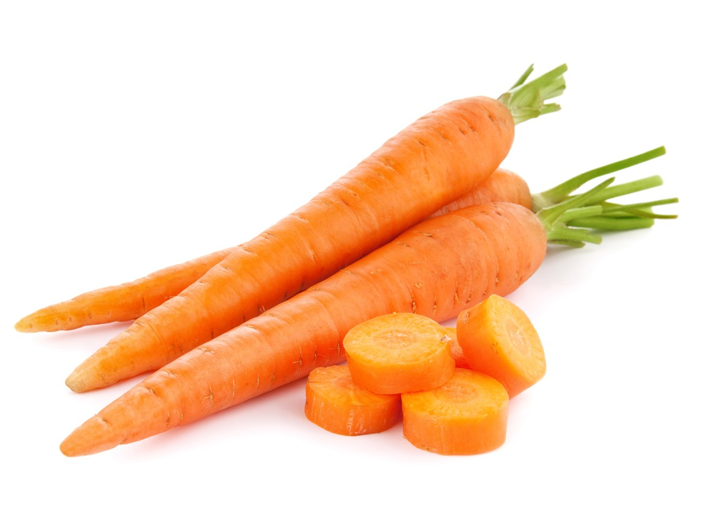 | Zanahoria | 41Kcal | 10g | 0.8g | 0.2g | 2.8g | Vitaminas A,B1,B2,B3,B6 | Hierro, Calcio, Fosforo |
| 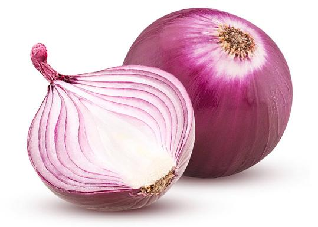 | Cebolla Morada | 40Kcal | 9.74g | 1.3 | 0.08g | 1.6g | Vitaminas A,B1,B2,B3,B6 | Hierro, Calcio, Fosforo |
| Pimenton Amari. | 27Kcal | 6g | 1g | 0g | 0.9g | Vitaminas A,B1,B2,B3,B6 | Potasio, Calcio, Magnesio |